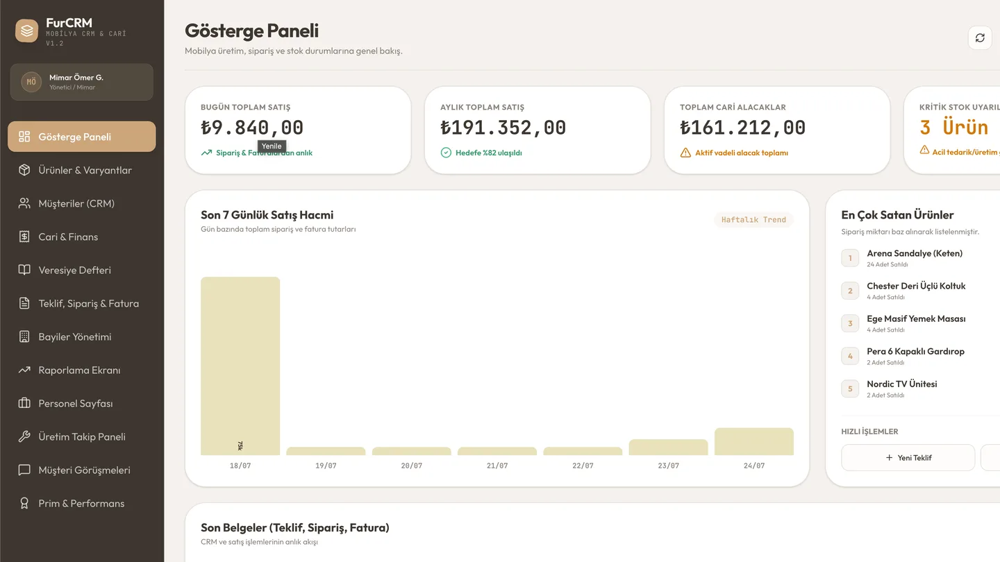

İş sonucu üreten web
Web sitesi
nasıl çalışır?
Görünürlükten talebe uzanan dijital yolculuğun dört temel katmanı.
01DikkatBulunur ol
02GüvenNet anlat
03İletişimKolaylaştır
04ÖlçümGeliştir
Görünürlükten talebe uzanan dijital yolculuğun dört temel katmanı.
Her sürece AI eklemek değil, doğru işi doğru sistemle çözmek gerekir.
İyi bir web sitesi ziyaretçiyi yalnızca karşılamaz; doğru sırayla bilgilendirir, güven verir ve iletişime yönlendirir.
Başlangıç noktası teknoloji değil; tekrar sıklığı, kural netliği ve karar riskidir.
Mobil görünüm küçültülmüş masaüstü değildir. İçerik önceliği ve kullanım akışı küçük ekran için yeniden düzenlenir.


Girdi, kural, AI, insan onayı ve kayıt katmanları birlikte tasarlanır.

Trafikten talebe kadar kritik sinyalleri izleyin; tasarım ve içerik kararlarını gerçek davranışla geliştirin.
Tek bir süreçte değer kanıtlanır; güvenilir sonuç alındığında kapsam adım adım büyütülür.